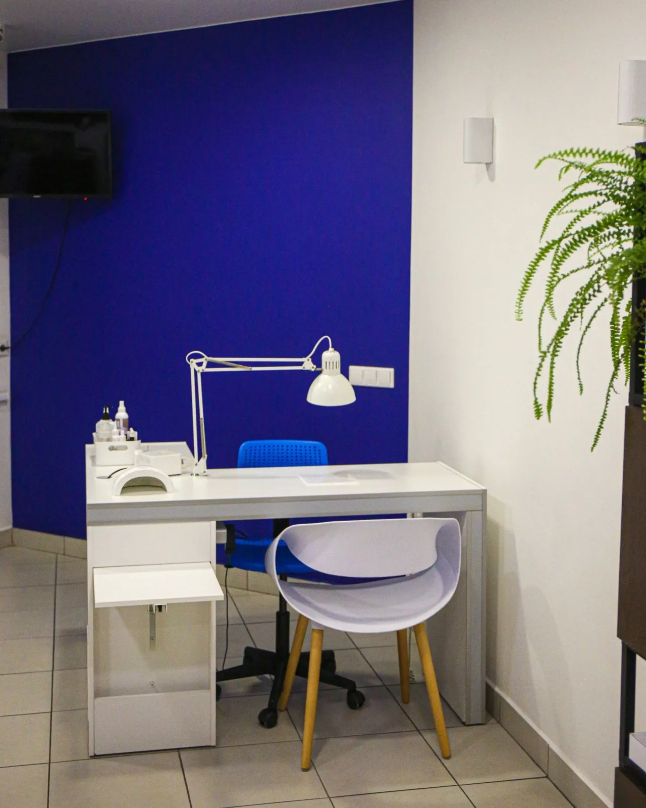
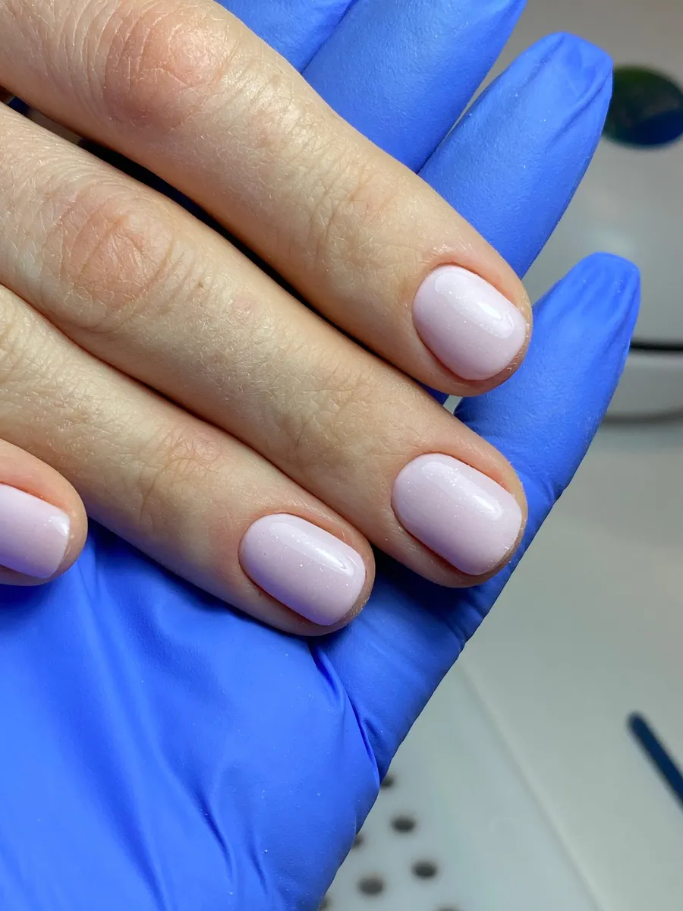
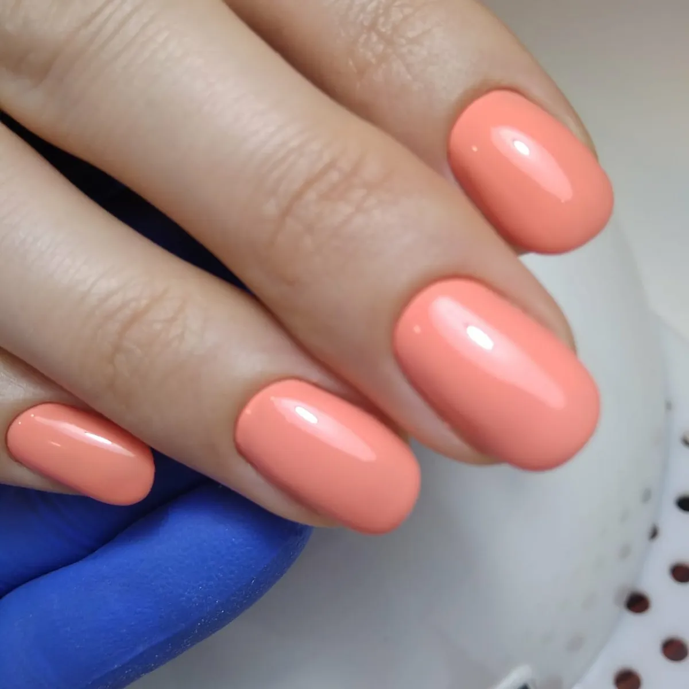
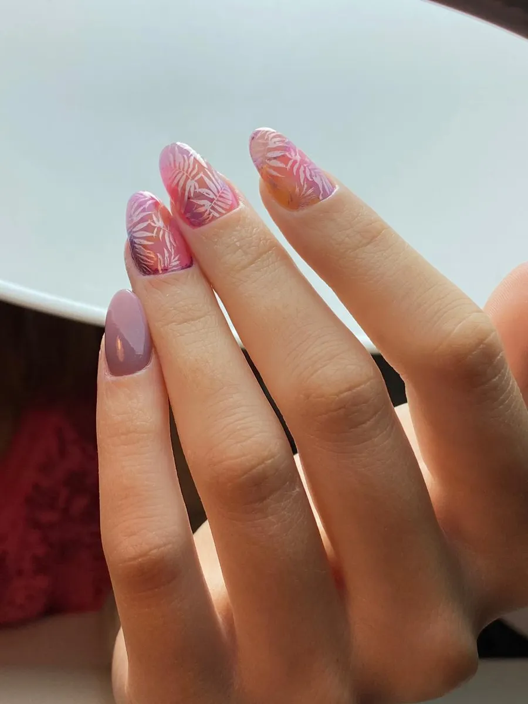
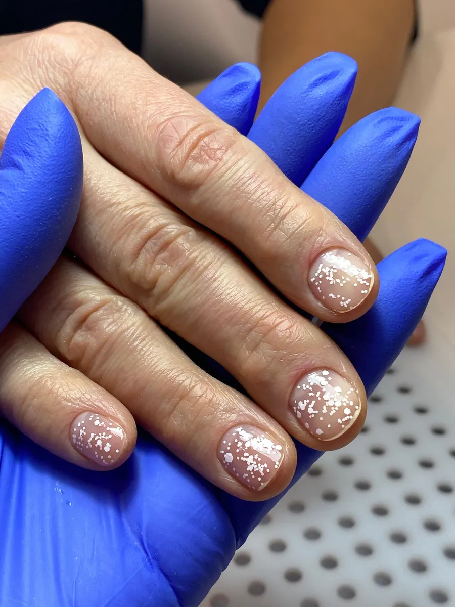
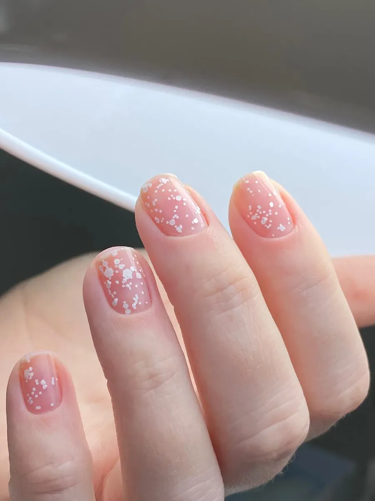
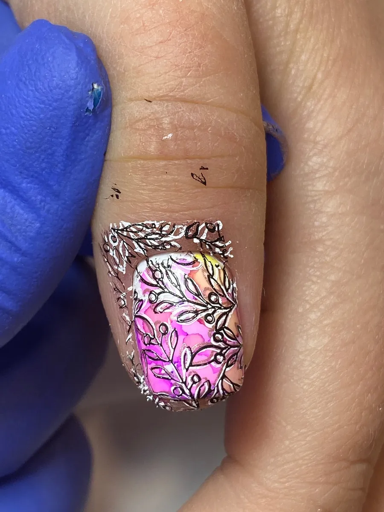
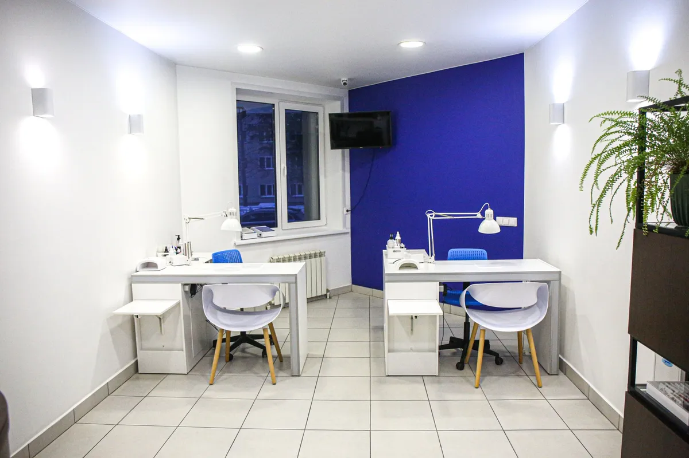
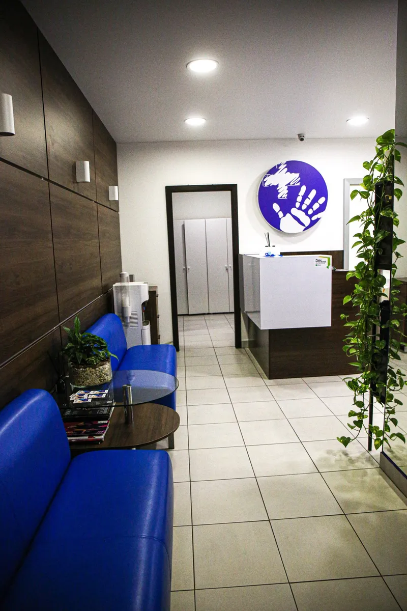

После отказа от гель лака стала посещать студию медицинского маникюра. Все замечательно, мастер Юлия чудесно делает маникюр, ручки и пальчики в восторге, атмосфера спокойная, чистота, уют, комфорт. Спасибо
tatiana gutova, 14 декабря 2025
Аппаратный маникюр, лечебный лак и массаж рук в конце процедуры. Гости пишут про спокойную атмосферу, чистоту и уют. Запись в WhatsApp - за минуту.

После отказа от гель лака стала посещать студию медицинского маникюра. tatiana gutova, 14 декабря 2025, отзыв на Яндекс Картах
Выберите цвет и форму - они попадут в сообщение для записи. Точный оттенок мастер подберёт при визите.
Оттенок: КрасныйФорма: овал
Фото с карточки студии на Яндекс Картах. Нажмите на фото, чтобы рассмотреть.






Здесь будут ваши цены.
Цены на карточке студии не указаны. Здесь будут ваши цены.
Выбираете услугу, день и время на этой странице - сообщение для студии уже готово.
"Мастер Наталья Крауш максимально аккуратно и профессионально обработала пальчики", - пишет Алина.
"Понравился лечебный лак, который нанесли в конце, хорошо держится, и крем", - из отзыва юлии м.
"Массаж рук по окончании процедуры - это полный восторг", - пишет Екатерина Канина.


"Атмосфера спокойная, чистота, уют, комфорт", - пишет tatiana gutova. Белые стены, синий акцент и ресепшн с логотипом студии.
После отказа от гель лака стала посещать студию медицинского маникюра. Все замечательно, мастер Юлия чудесно делает маникюр, ручки и пальчики в восторге, атмосфера спокойная, чистота, уют, комфорт. Спасибо
tatiana gutova, 14 декабря 2025
Несколько месяцев , после решения отказаться от гель-лака, посещаю данное место! Ногти за это время вновь приняли свой естественный и главное опрятный вид ! Хожу к мастеру Наталье, делает все быстро и очень аккуртно, а массаж рук по окончании процедуры - это полный восторг!
Екатерина Канина, 10 декабря 2025
Очень понравилось как сделали аппаратный маникюр. Мастер Наталья Крауш максимально аккуратно и профессионально обработала пальчики. Я очень требовательная к качеству, так как очень часто мне повреждают кожу в зоне кутикулы. Наталья все сделала идеально. И очень приятно помассировала руки пока мазала их кремом
Алина, 18 декабря 2025
Делала маникюр у мастера Юли Арчебасовой. Очень понравилась её работа. У меня очень тонкая кожа, Юля работала очень аккуратно и внимательно, в тоже время быстро и качественно. Юля хороший мастер, чуствуется, что она любит свою работу, обязательно запишусь к ней ещё. Рекомендую, записывайтесь к Юле, не пожалеете.
ирина науменко, 17 декабря 2025
Отзывы перенесены дословно, без правок.
На карточке студии цены не указаны. Здесь будут ваши цены, а пока стоимость можно уточнить при записи.
Так гости называют аппаратный маникюр в студии. "Ногти за это время вновь приняли свой естественный и главное опрятный вид", - пишет Екатерина Канина после отказа от гель-лака.
Выберите услугу, день и время на этой странице - откроется WhatsApp с готовым сообщением (или Telegram). Можно позвонить: +7 (383) 209-04-80.
Новосибирск, Ядринцевская улица, 18, этаж 1. Работаем ежедневно с 9:00 до 21:00.
Выберите услугу, день и время - откроется WhatsApp с готовым сообщением.